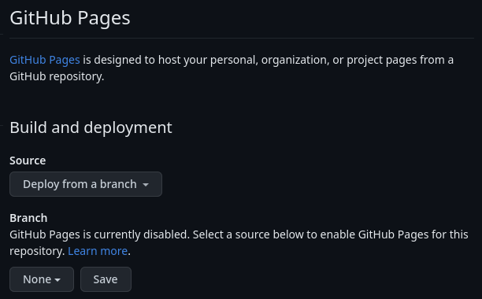

4-2: GitHub Pages
The Honkit tool that we're using can generate websites for any platform, but since we're on GitHub anyhow, we can take advantage of GitHub Pages. This feature lets you host static websites directly from a GitHub Repo. There are technically two ways to use this feature. You can see this in your repo's Pages settings (/settings/pages)

There are 2 ways to use GitHub Pages: either through GitHub Actions, or by specifying a branch that will contain the contents for the site. That being said, I greatly prefer using GitHub Actions for the automated build process. Once you're comfortable with Pages, I would check out Actions.
We're going to use the branch method, as GitHub Actions are a little outside the scope of this course.
Branch Setup
In your local copy of your creating-with-git fork, make a new branch for our Pages deployment.
git switch -c pages
Then, as we've done before, push this new branch to GitHub.
git push -u origin pages
Now we're not quite finished. See, this branch is going to include some parts that main does not. This branch needs to have the contents of the built site. So, y'know, let's build the site.
npx honkit build
You'll notice that there is _book folder in your repo. That's where your built site is! This folder has actually been there for a while now, since that's where npx honkit serve was generating our local site. But Git was ignoring it based on an entry in the repo's .gitignore file.
Now unfortunately, GitHub Pages is a bit inflexible in this regard. If you want to use a branch and not the root of the repo, the folder name has to be docs. We can make this change in once, but we want to make sure this process is repeatable.
It's time to write a build script.
Btw, this is the exact kind of nonsense that GitHub Actions is designed to automate. Still, I think it's worthwhile to learn the manual process first.
Build Script
Our build script needs to accomplish the following:
- Remove
docsfodler if it exists to prevent it from getting added to_book. - Rebuild the site.
- Copy the
_bookfolder contents todocs - Create a new commit for the rebuild (every time), maybe with a date?
- Push the commit to GitHub.
Honestly not too bad, and easily done in bash. Here's what our new build.sh should look like.
#!/bin/bash
# Remove existing docs folder
if [ -d docs ]; then
rm -rf docs
fi
# Rebuild the site
npx honkit build
# Copy the `_book` folder contents to `docs`
cp -Rf _book docs
# Create a new commit for the rebuild (every time), maybe with a date?
git add docs/
git commit -m "Rebuild: $(date)"
# Push the commit to GitHub.
git push
Save this file. Then make it executable by running chmod +x build.sh. Now of course we'll add it:
git add build.sh
git commit -m "Add build script"
Let's do a test run! Make some changes to your Markdown files, then run:
./build.sh
If all goes well, your content should be pushed to GitHub, and in a minute or two, your site will be live at https://your-account-name.github.io/your-repo-name.
Believe it or not, that's it! You've not only published your documentation, but you've finished this course! Well done! Now all that's left is the Exhibition Of Mastery.